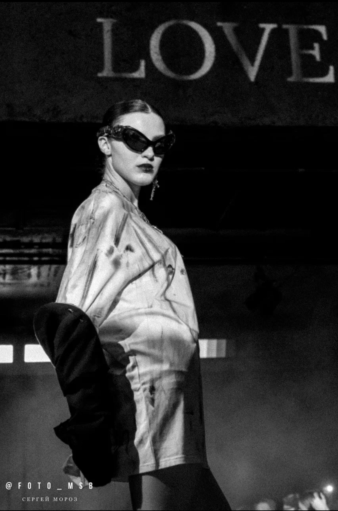
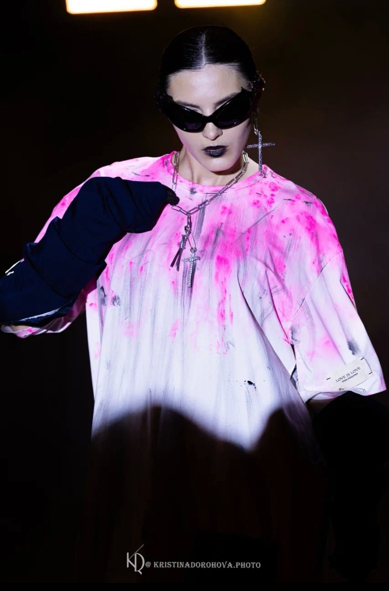

Дизайнерский показ
Показ Веры Першиной
Участие модели Елизаветы Пидковой в показе Веры Першиной. Кадр с подиума и детали образа.
В галерее — чёрно-белый кадр с подиума и цветная фотография в розовой рубашке. На фотографиях показаны образ с тёмными очками, аксессуары и макияж.




Елизавета Пидкова — модель из Ростова-на-Дону
Рост — 175 см, параметры — 90 / 72 / 94 см. Посмотрите снэпы модели и видео проходки. По вопросам съёмок и участия в показах можно написать в Telegram.